Soluciones fabricadas en Chile, muchas de ellas disponibles con nuestro compuesto antibacterial de partículas de cobre incorporado.
Productos con molde ya desarrollado: elige el que necesitas, envíanos la cantidad y cotizamos por WhatsApp.
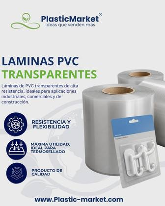
Alta transparencia y resistencia para aplicaciones industriales y comerciales.
Ver producto →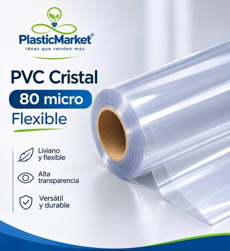
PVC Cristal flexible de 80 micras: liviano, transparente, versátil y durable.
Ver producto →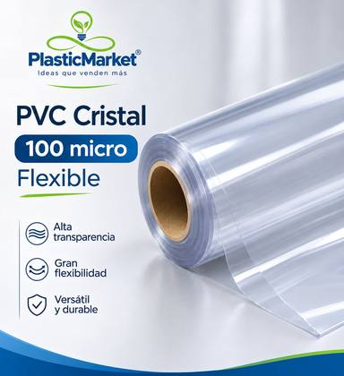
PVC Cristal flexible de 100 micras: transparente, de gran flexibilidad, versátil y durable.
Ver producto →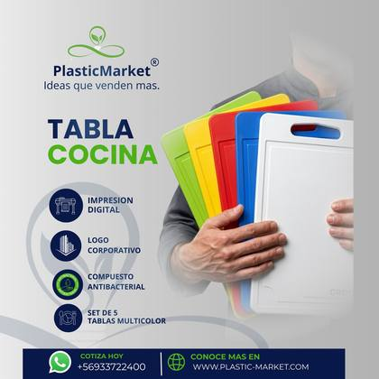
AntibacterialSuperficie antibacterial con cobre incorporado, ideal para uso alimentario.
Ver producto →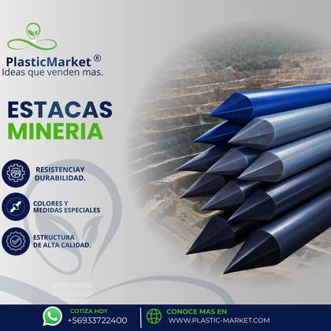
Alta resistencia mecánica y a la intemperie para faenas mineras.
Ver producto →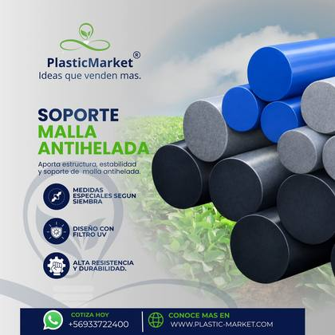
Estructura de soporte para protección de cultivos contra heladas.
Ver producto →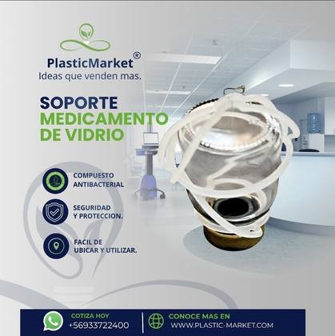
AntibacterialCompuesto antibacterial con cobre, diseñado para uso hospitalario.
Ver producto →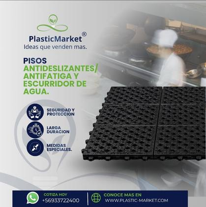
Piso modular antideslizante y antifatiga para puestos de trabajo de pie prolongado.
Ver producto →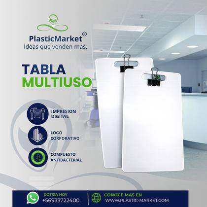
AntibacterialSuperficie de apoyo con protección antibacterial permanente.
Ver producto →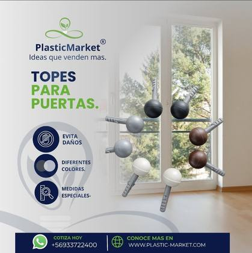
Piezas de inyección de alta durabilidad para uso residencial e industrial.
Ver producto →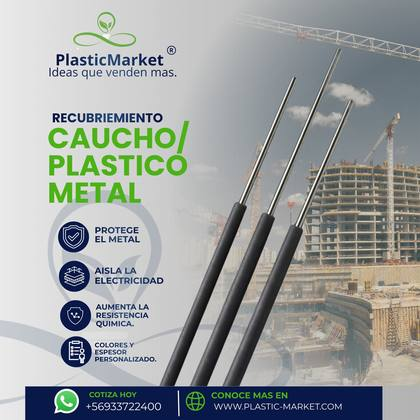
Protección y aislación de piezas metálicas mediante recubrimiento técnico.
Ver producto →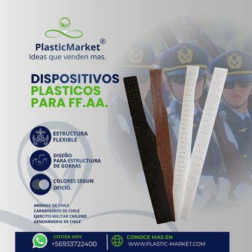
Componentes técnicos de precisión para uniformidad de las Fuerzas Armadas.
Ver producto →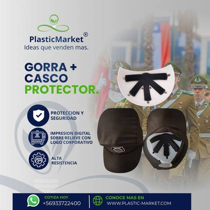
Elementos de protección personal desarrollados a medida institucional.
Ver producto →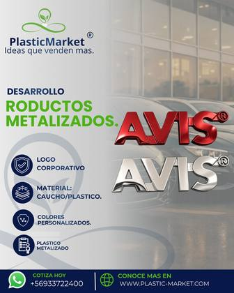
Piezas plásticas y de caucho con acabado metalizado de alta definición para logos e insignias corporativas.
Ver producto →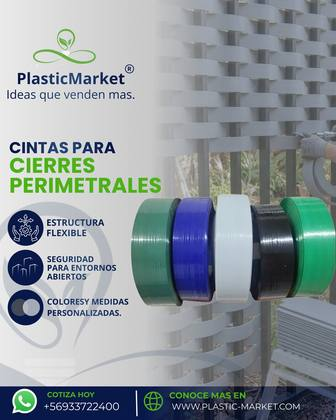
Estructura flexible y resistente para el cierre y protección de entornos abiertos.
Ver producto →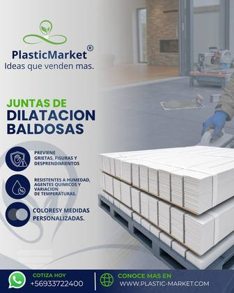
Previenen grietas, fisuras y desprendimientos frente a la variación de temperatura.
Ver producto →Fabricamos lo que tu empresa necesita.
Si existe una idea, nosotros la convertimos en un producto industrial. Desarrollamos soluciones completamente a medida, desde la ingeniería hasta la fabricación final.
Piezas de precisión para procesos productivos exigentes.
Productos con protección antibacterial para contacto con alimentos.
Productos diseñados desde cero junto al cliente.
Desde la ingeniería hasta la producción.
30 días, según evaluación crediticia.
Retiro en taller. Envío sin costo dentro de Santiago de Chile; otros envíos a coordinar.
15 días corridos desde el envío de la cotización, sujetos a disponibilidad de stock o fabricación a medida.
Desde la fecha de envío de la cotización formal, tienes 3 días hábiles para confirmar la compra; de lo contrario, el desarrollo se descarta.
Boleta o factura.